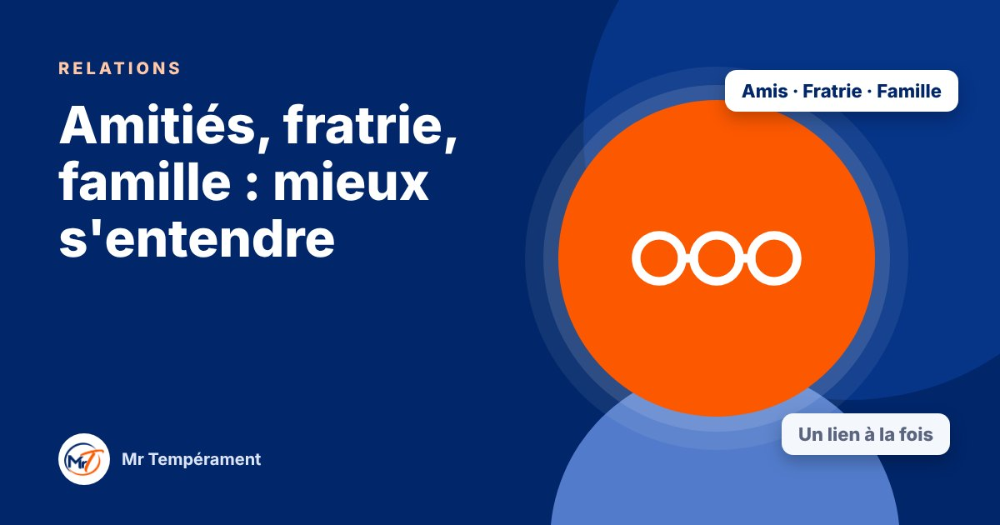

Amitiés, fratrie, famille : mieux s'entendre

On choisit ses amis, pas sa famille. Dans les deux cas, comprendre les tempéraments rend les relations plus simples.
Un cousin trop bruyant, une sœur très réservée, un ami qui ne rappelle jamais, un frère qui critique tout. Dans les relations qui ne relèvent ni du couple ni de la parentalité, on se heurte souvent aux mêmes malentendus. Les tempéraments éclairent une grande partie de ces situations.
Les relations sociales sont un terrain d'adaptation
Avec des amis, une fratrie ou une famille élargie, on adapte spontanément son comportement. On se montre sous son meilleur jour, ou bien on retombe dans ses vieux réflexes d'enfant. Ce n'est pas toujours conscient. Selon le groupe, on peut être plus Dominant, plus Influent, plus Stable ou plus Consciencieux.
Se demander « Avec qui suis-je le plus naturel ? » et « Avec qui est-ce que je m'adapte le plus ? » est un excellent point de départ.
Pourquoi on se heurte
Le Dominant peut prendre la parole et organiser pour tous, sans demander. L'Influent peut monopoliser l'ambiance. Le Stable peut accepter par politesse et s'épuiser. Le Consciencieux peut juger vite et se retirer. Chacun croit bien faire, et les autres le vivent autrement.
Dans une fratrie ou une famille, ces dynamiques datent souvent de l'enfance et se rejouent à l'identique des années plus tard.
Comment entretenir un lien avec chaque tempérament
Avec un Dominant, allez à l'essentiel et soyez franc. Avec un Influent, partagez un moment, même court, et montrez votre enthousiasme. Avec un Stable, prenez des nouvelles régulièrement et laissez-lui le temps de s'ouvrir. Avec un Consciencieux, respectez ses silences et ses besoins de précision.
Il ne s'agit pas de changer qui vous êtes, mais d'ajuster quelques gestes.
Trois habitudes pour des relations qui durent
Posez deux questions avant de donner votre avis. Prenez des nouvelles d'une personne qui ne demande rien. Dites non à une invitation de temps en temps, sans vous justifier, pour ne pas vous épuiser.
Et lorsqu'une relation vous pèse, demandez-vous d'abord : « Qu'est-ce qui, dans ma manière d'être, rend cette relation plus difficile ? » Cela ouvre souvent une porte.
Un lien à la fois
Vous n'avez pas à tout réparer en une fois. Choisissez une relation qui compte, essayez un geste, observez. Les petits ajustements, répétés, changent plus que les grandes résolutions.
Pour aller plus loin
Le Bilan DISC 3 domaines, avec le trio Relations, explore votre tempérament dans votre couple, votre parentalité et vos relations sociales, avec une synthèse du trio.
Découvrir le trio Relations